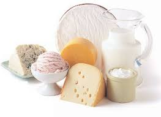
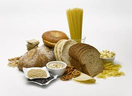

We know inflammation in the body can contribute to brain fog, which isn't good when you're trying to perform a task like coding, that takes a lot of focused attention. See below for the biggest culprits of inflammation in the body as well as a list of some anti-inflammatory foods. After all, we are what we eat.
Foods that can Cause Inflammation and Brain Fog


Dairy, wheat, refined sugar and alcohol can all increase inflammation and cause brain fog in the body. Some people are particularly sensitive and do better with avoidance, but for most of us, we are fine consuming these in our diet in moderation.
Anti-inflammatory Foods
The following is a list of foods that have been shown to fight inflammation in the body. Many of these foods have other benefits such as reducing cancer risk and heart-disease
Berries - Berries of all types contain anti-oxidants and anthocyanins, which have been shown to reduce inflammation and boost immunity.
Fish - Fish, particularly fatty fish such as salmon, sardines and anchovies are high in omega-3 fatty acids, which have an anti-inflammatory effect.
Cruciferous Vegetables - Cruciferous vegetables such as broccoli, kale, brussel sprouts and cauliflower contain the anti-oxidant sulforaphane, which has anti-inflammatory effects.
Peppers & Tomatoes - Peppers and tomatoes are part of the nightshade family. Peppers are high in quercetin while tomatoes are high in lycopene which contributes to anti-inflammatory effects in the body.
Tumeric - Tumeric is a spice that contains curcumin, which is a powerful anti-inflammatory substance. It's absorption in the body is significantly increased when combined with black pepper.
Extra Virgin Olive Oil - Extra virgin olive oil contains oleocanthal which has anti-inflammatory properites. The less refined the oil, the better.